บินสำรวจด้วยโดรน DJI Air 2S เก็บภาพถ่ายทางอากาศบริเวณอ่างเก็บน้ำห้วยโป่งที่เสียหายและสะพานข้ามลำห้วยโป่งบนทางหลวงหมายเลข 108 ประมวลผลด้วย Agisoft Metashape และ WebODM เพื่อผลิต Point Cloud, DEM/DSM และ Orthomosaic ความละเอียดสูง สนับสนุนการประเมินความเสียหายและออกแบบซ่อมแซมโครงสร้าง
หลังพายุคาจิกิทำให้อ่างเก็บน้ำห้วยโป่งเสียหายและสะพานข้ามลำห้วยโป่งบนทางหลวงหมายเลข 108 ขาด (อ้างอิงจากผลงาน RS Change Detection ที่วิเคราะห์ด้วยภาพถ่ายดาวเทียม) จำเป็นต้องเก็บข้อมูลภูมิประเทศระดับพื้นที่ (ground-level) ที่ละเอียดกว่าเพื่อใช้ประเมินขอบเขตความเสียหายเชิงปริมาตรและสนับสนุนการออกแบบซ่อมแซม จึงบินสำรวจด้วย UAV แบ่งเป็น 2 ชุดข้อมูล คือ จุดอ่างเก็บน้ำ/สันทำนบที่เสียหายโดยตรง (ระยะใกล้) และภาพรวมหมู่บ้าน ถนน และสะพานห้วยโป่งตลอดแนว (ระยะกว้าง)
ภาพถ่าย 44 ภาพ ประมวลผลเป็น Dense Cloud 79,014,605 จุด และ 3D Model 22,289,012 หน้า แสดงสภาพสันทำนบและร่องน้ำกัดเซาะที่จุดเสียหายโดยตรง
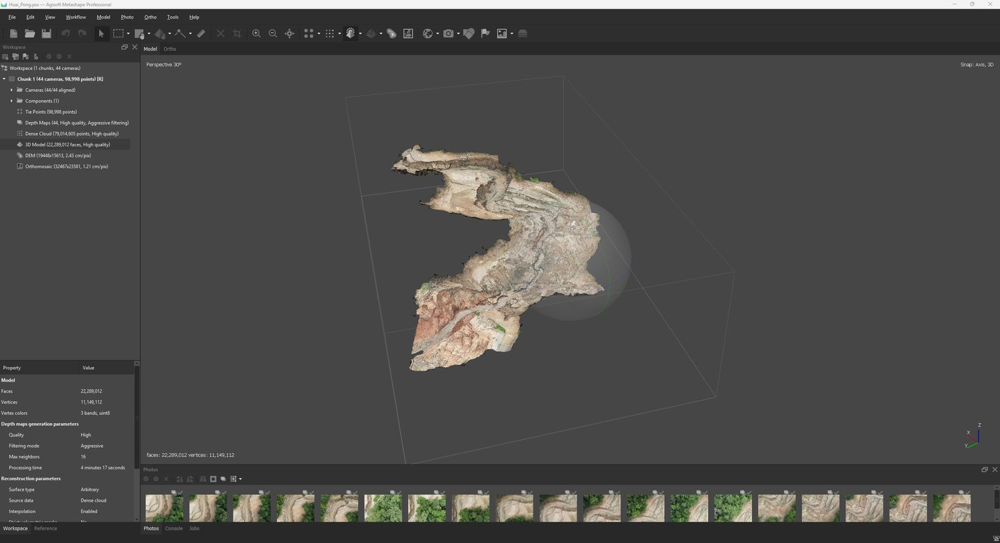
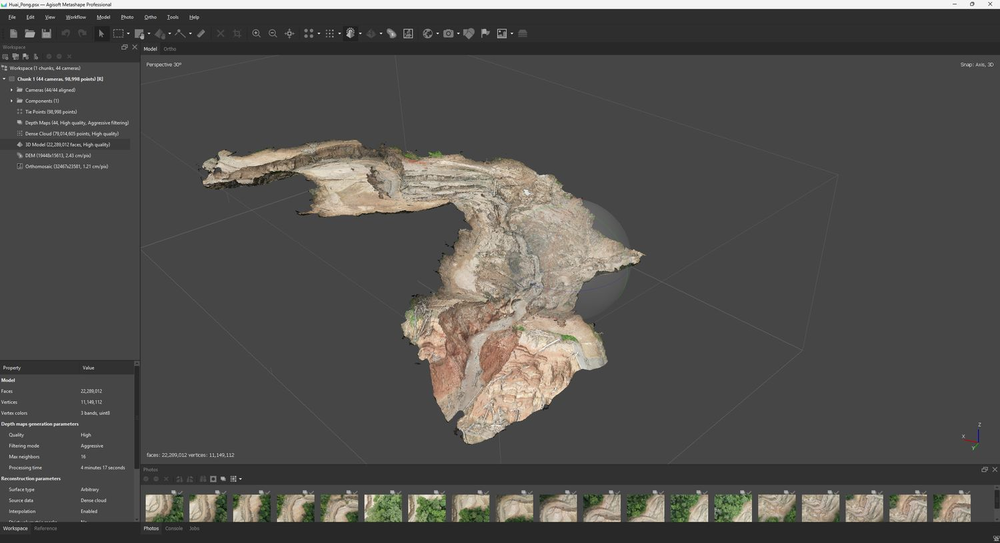
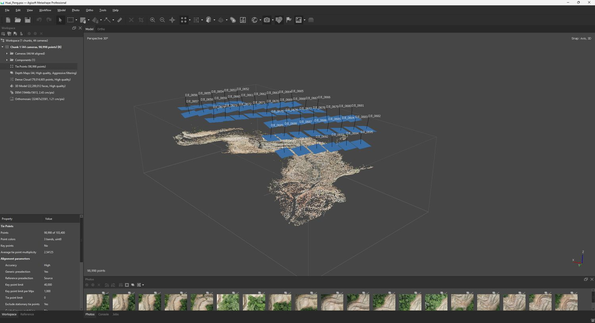
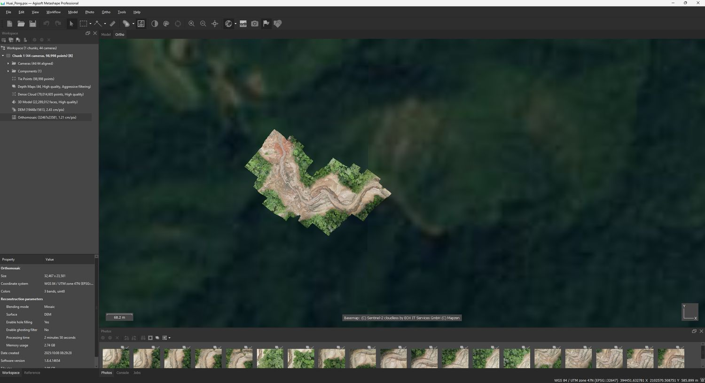
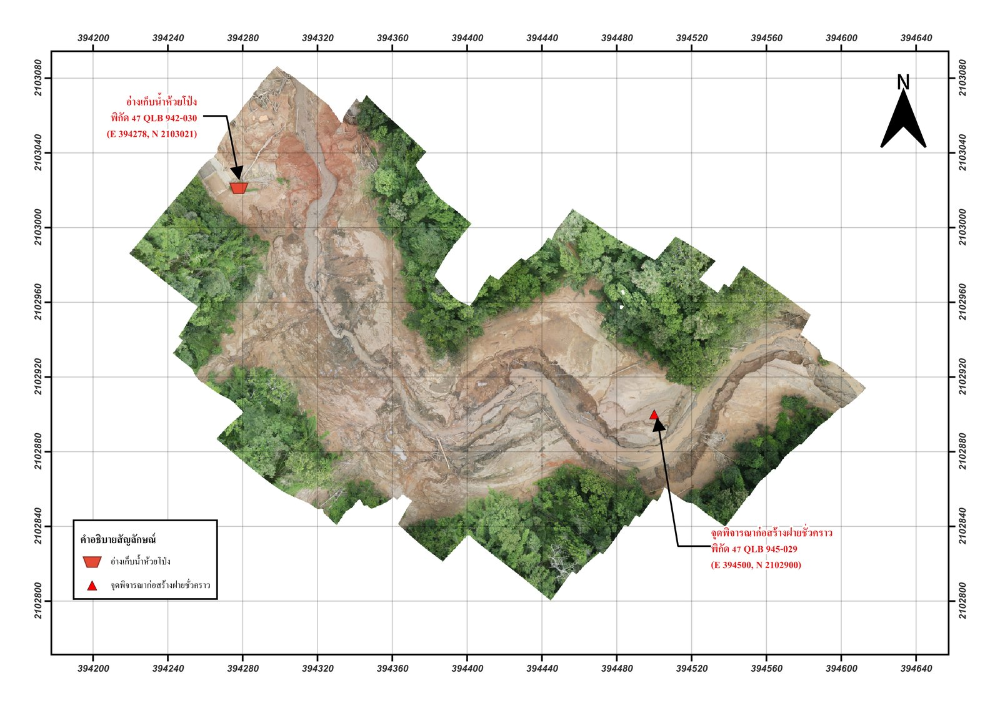
ภาพถ่ายรวม 1,424 ภาพ แบ่งประมวลผล 3 Chunk แล้วรวมเป็น Merged Chunk 712 ภาพ (2,242,317 Tie Points) ครอบคลุมหมู่บ้าน ถนน สะพานห้วยโป่ง และพื้นที่เกษตรกรรมโดยรอบ
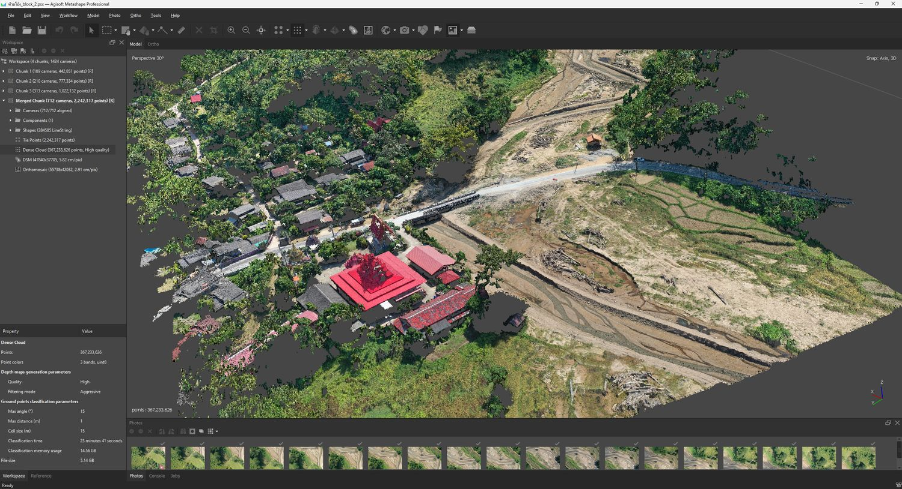
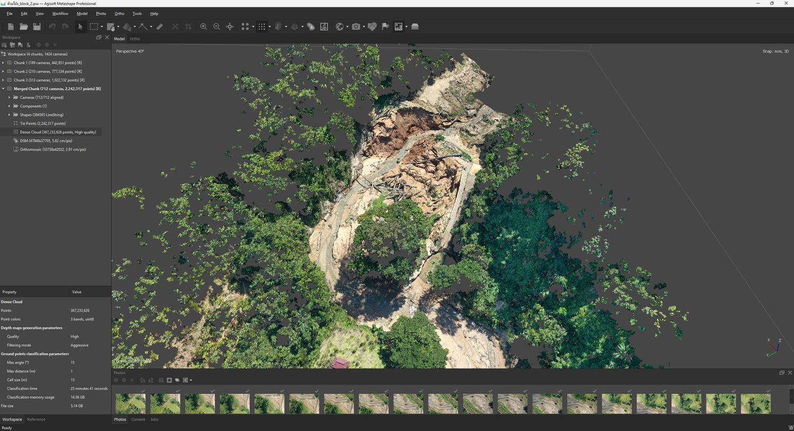
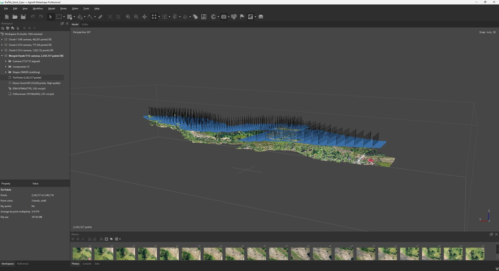
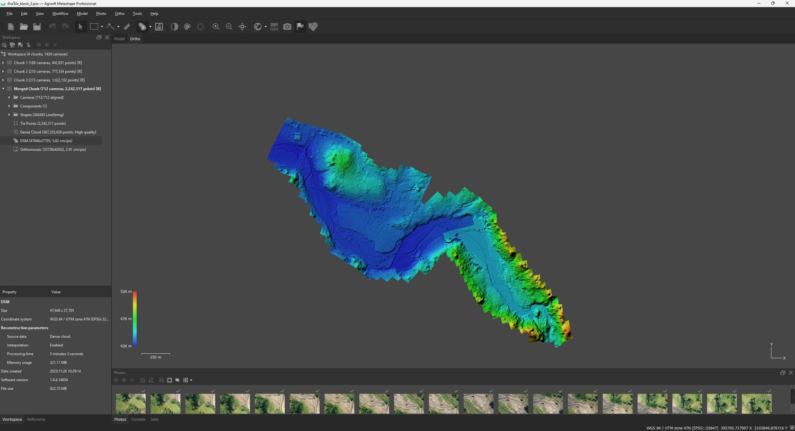
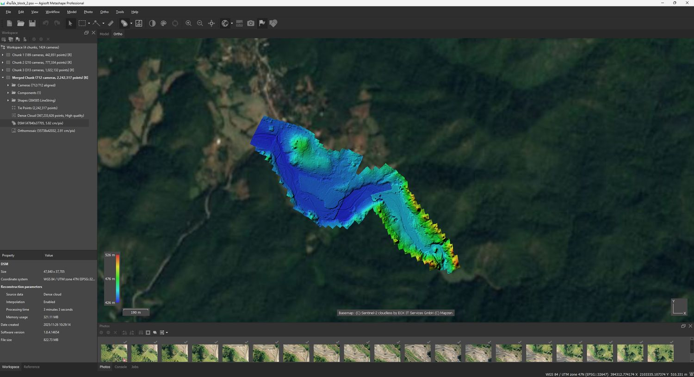
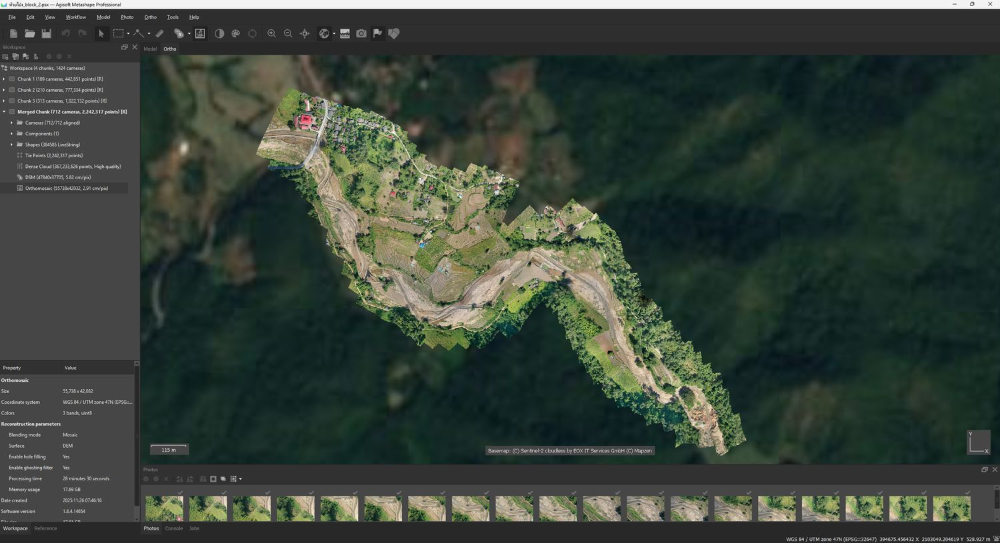
นอกจาก Agisoft Metashape ยังทดลองใช้ WebODM ซึ่งเป็นซอฟต์แวร์โอเพนซอร์สสำหรับประมวลผลภาพถ่ายทางอากาศ เพื่อเปรียบเทียบผลลัพธ์และเป็นทางเลือกสำรองเมื่อต้องประมวลผลชุดข้อมูลขนาดใหญ่
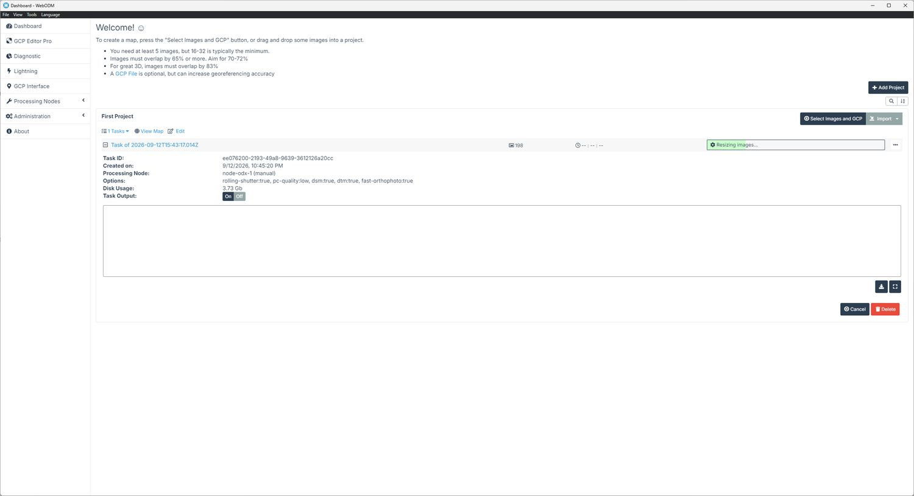
ลงพื้นที่บินสำรวจจริงบริเวณอ่างเก็บน้ำห้วยโป่งและหมู่บ้านโดยรอบ ในช่วงที่ยังมีร่องรอยความเสียหายจากน้ำท่วมและการซ่อมแซมเส้นทางสัญจร
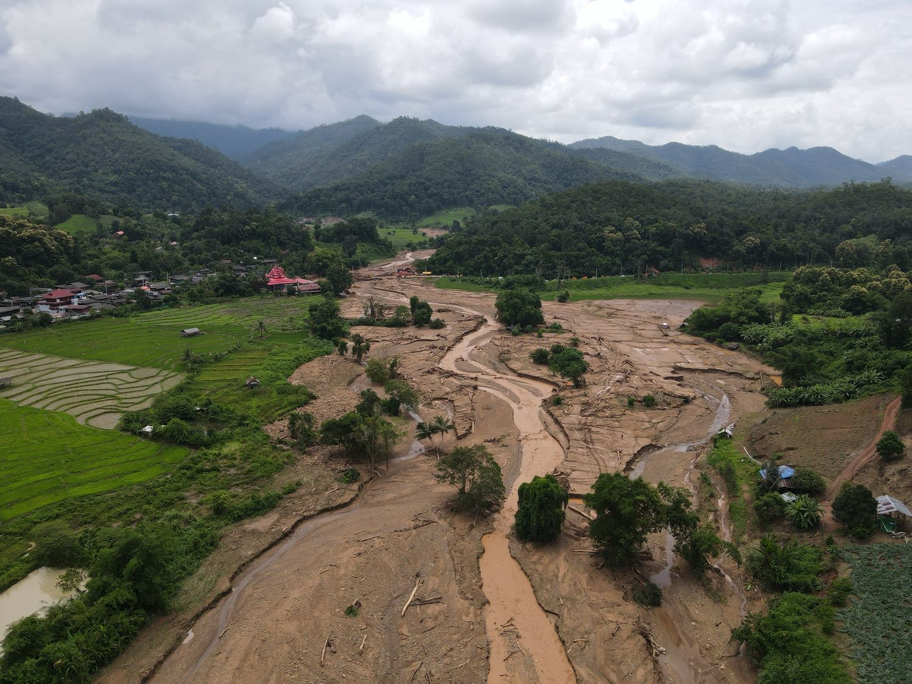
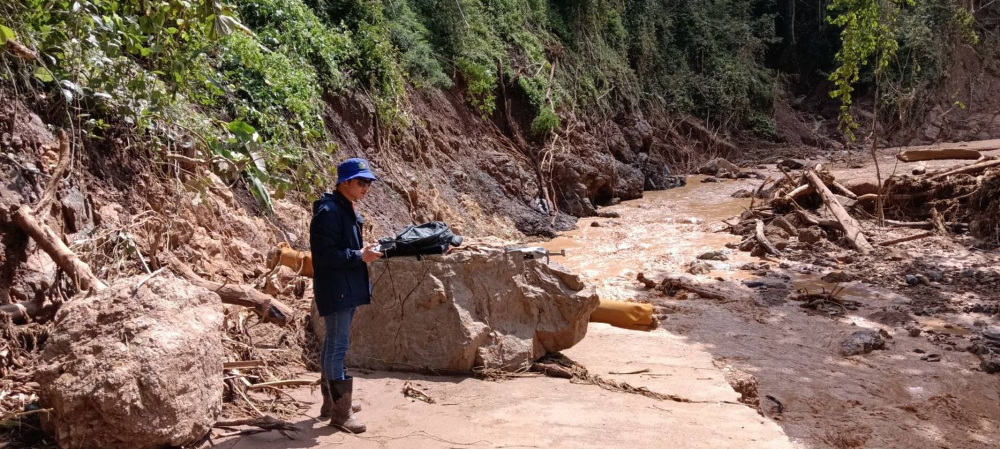
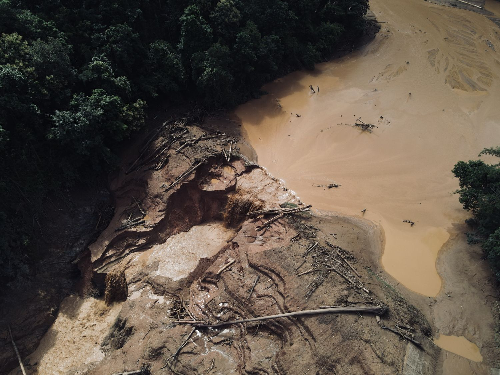
ข้อมูล Point Cloud, DEM/DSM และ Orthomosaic ความละเอียดสูงที่ได้ ใช้สนับสนุนการประเมินปริมาตรความเสียหายของอ่างเก็บน้ำและถนนอย่างละเอียดกว่าการวิเคราะห์ภาพถ่ายดาวเทียมเพียงอย่างเดียว เป็นข้อมูลประกอบการออกแบบซ่อมแซมโครงสร้างและวางแผนฟื้นฟูเส้นทางสัญจรผ่านสะพานห้วยโป่ง